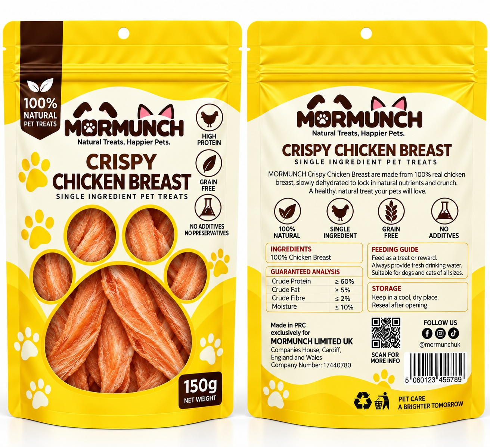
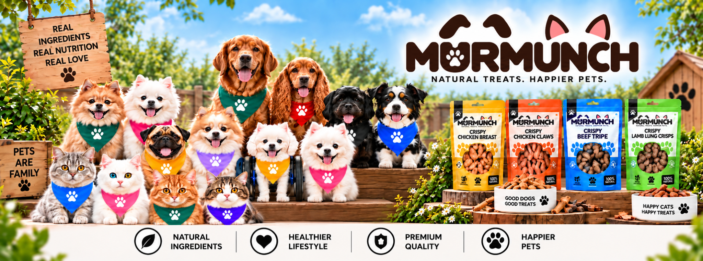
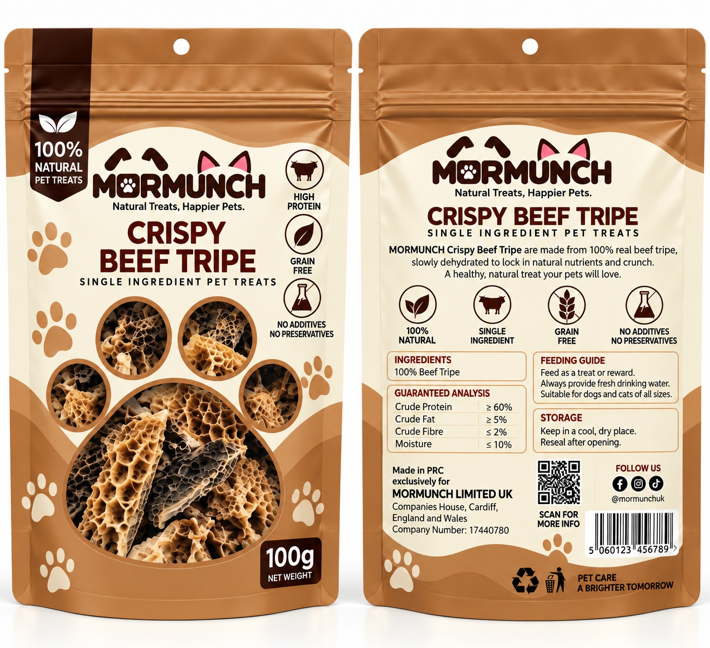
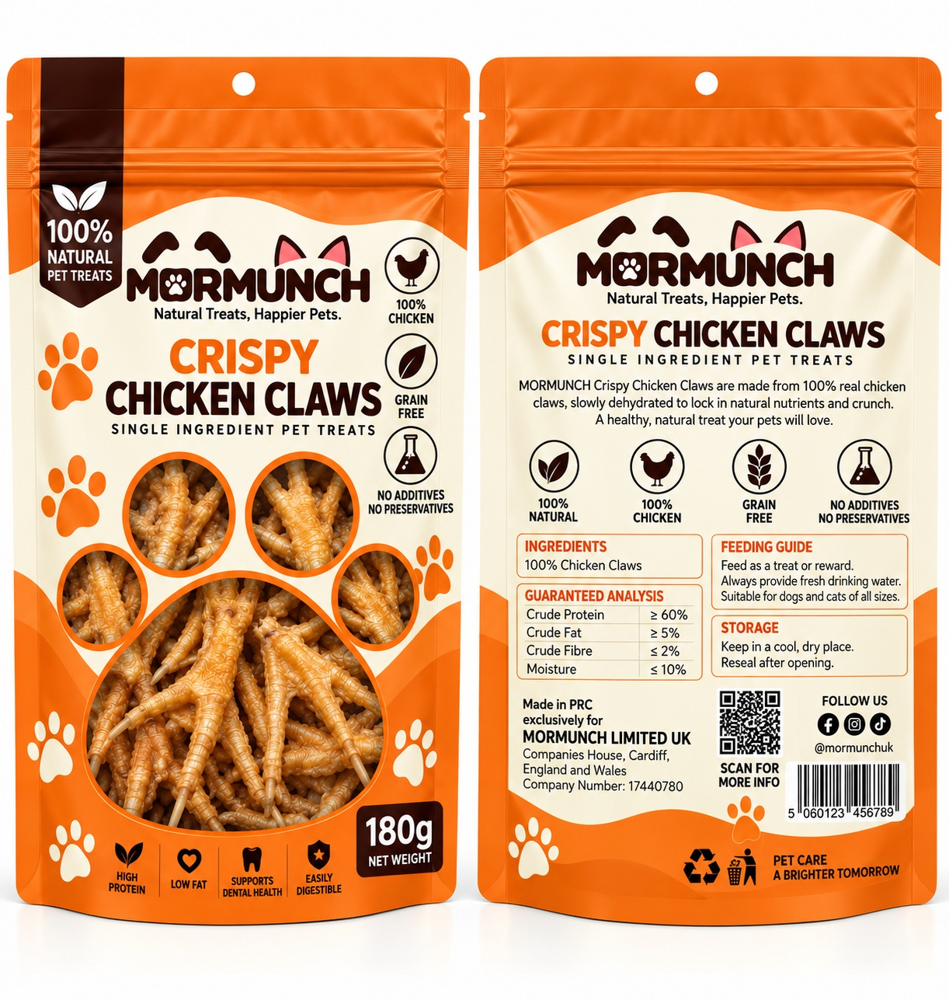
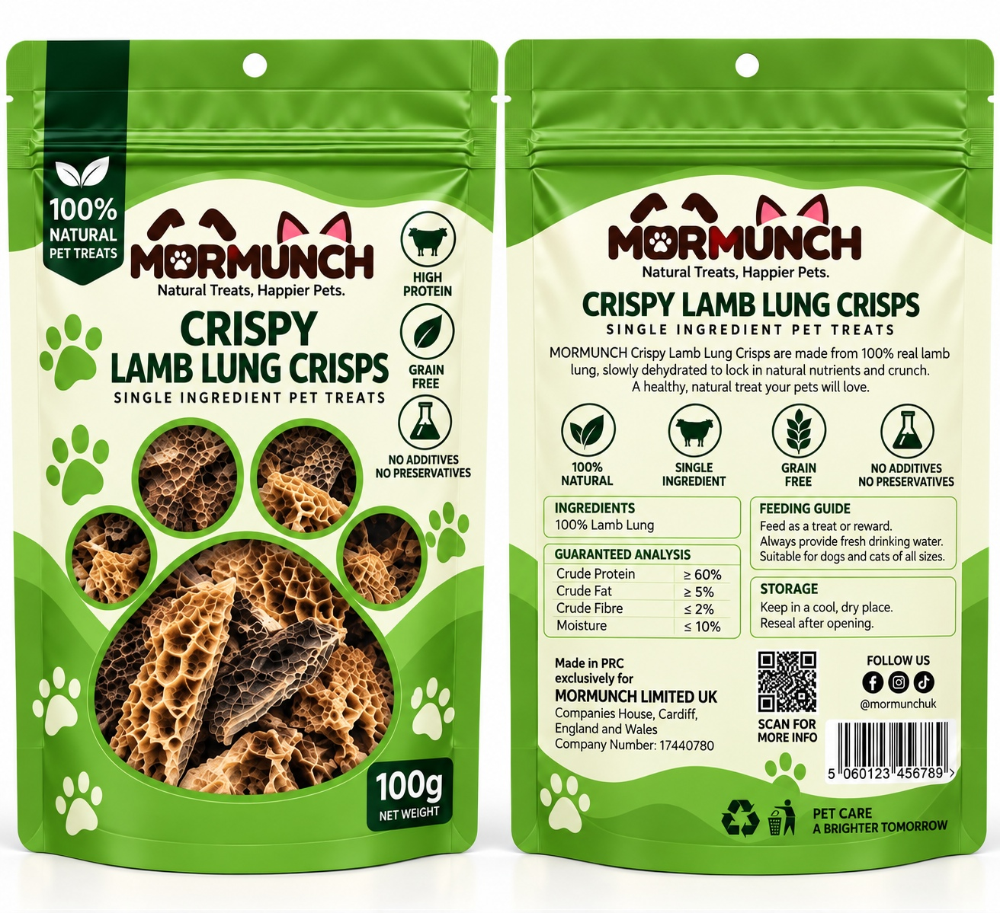
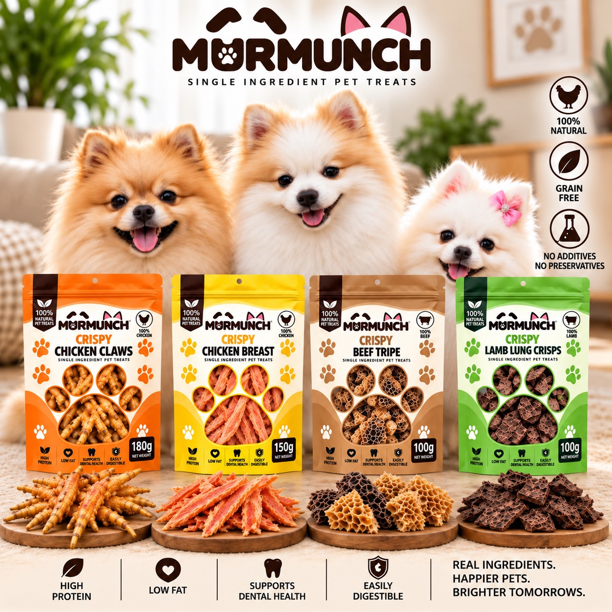
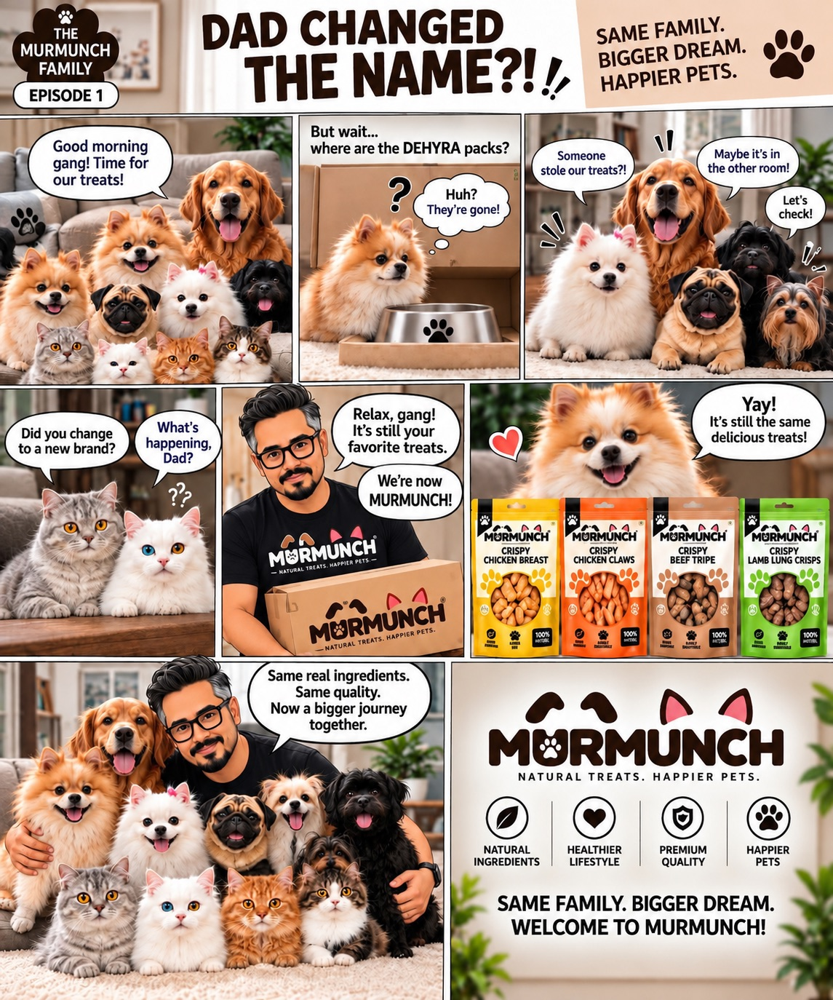
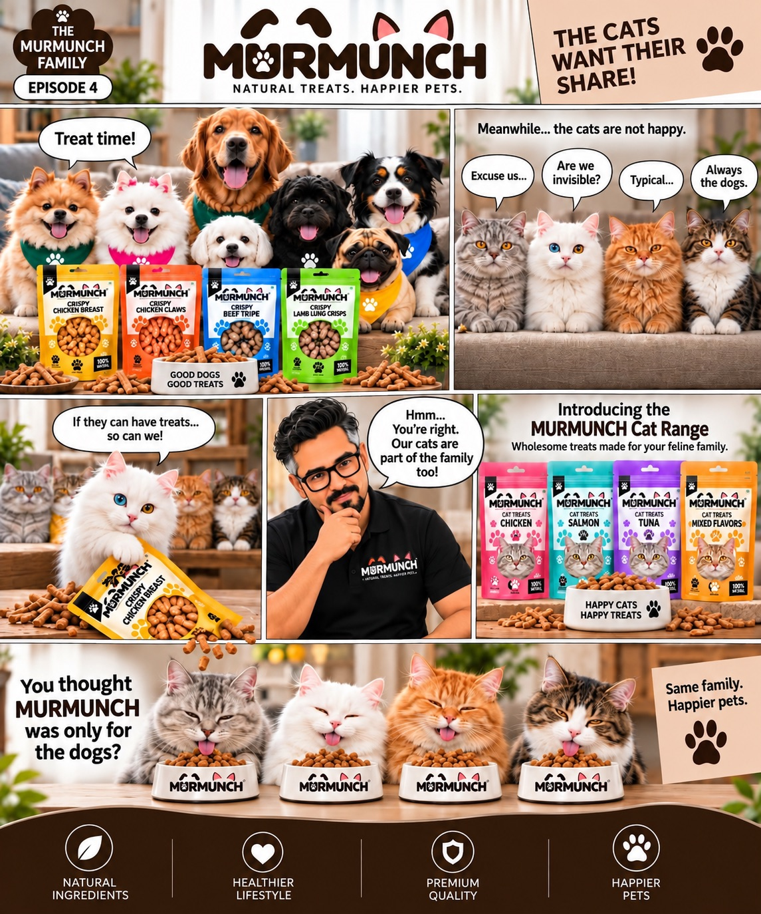
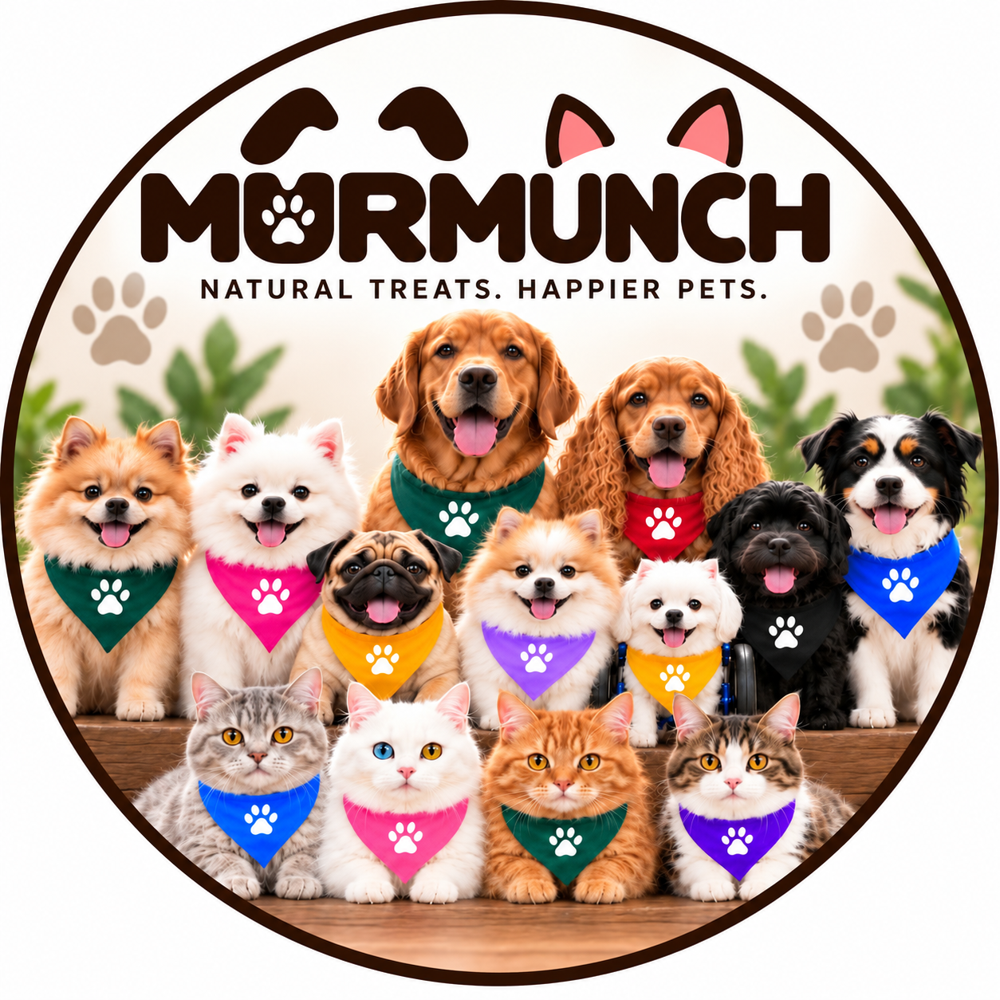

150gSingle ingredient
Crispy Chicken Breast
100% chicken breast, gently dried into a naturally tasty, crunchy reward.
- High in protein
- Grain free
- No unnecessary additives

We believe pet treats should be recognisable, simple and seriously tasty. Our range is built around real ingredients and careful drying, giving dogs and cats the flavour and texture they love.
Why we keep it simple →From crunchy single-ingredient treats to everyday nutrition, every product is made with pets in mind.

150g100% chicken breast, gently dried into a naturally tasty, crunchy reward.

100g100% beef tripe, slowly dehydrated to lock in natural nutrients and crunch.

180g100% chicken claws, slowly dehydrated for a naturally crunchy treat pets love.

100g100% real lamb lung, slowly dehydrated to create a light, natural and crunchy reward.

Our treats start with recognisable ingredients. What you see is what you get.
Careful drying helps create the texture, aroma and concentrated flavour pets love.
Our single-ingredient treats are made without unnecessary additives or preservatives.
Training, rewarding, chewing or making dinner more exciting. Murmunch fits right in.

Some go straight for the chicken. Some won't share their beef tripe. Some sit beside the bowl waiting for treat time.
That's the MurMunch family. Different personalities, same love for proper treats.
Meet the gangMurMunch grew from a simple idea: give pets treats made from ingredients their humans can recognise and feel good about giving.
That idea became a brand built around real pets, real personalities and a slightly unhealthy obsession with making pets happy.

And every personality has a favourite MurMunch.

We're building MurMunch's retail network across the GCC and beyond. If you run a pet shop, boutique, grooming business or another pet-focused business, we'd love to talk.
Wholesale enquiry →MurMunch is building a premium pet brand for dog and cat lovers across the Gulf and beyond, with a focus on quality, personality and products pets actually get excited about.
Whether you're a pet parent, retailer or simply want to know more about MurMunch, we'd love to hear from you.